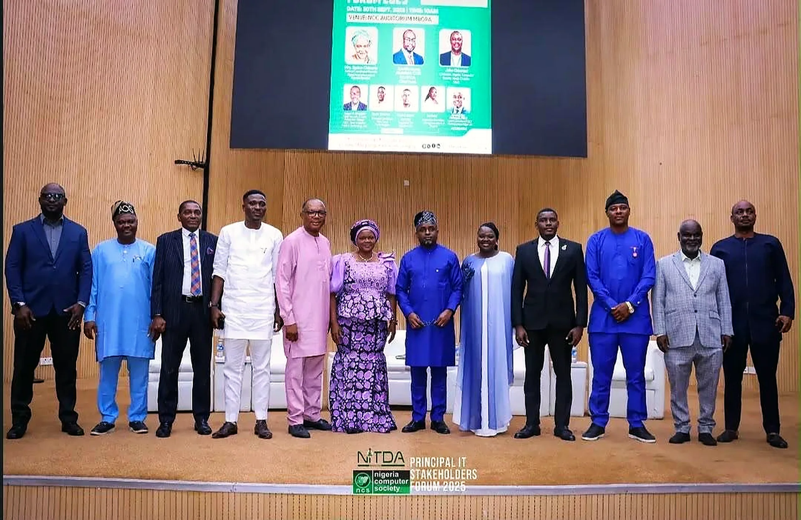
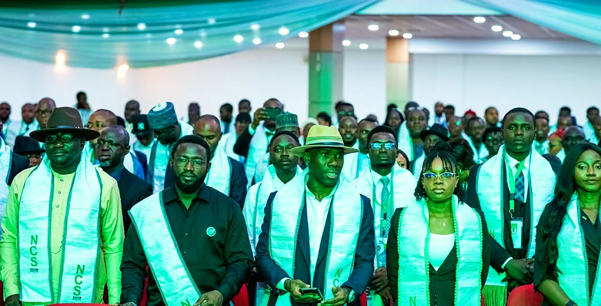
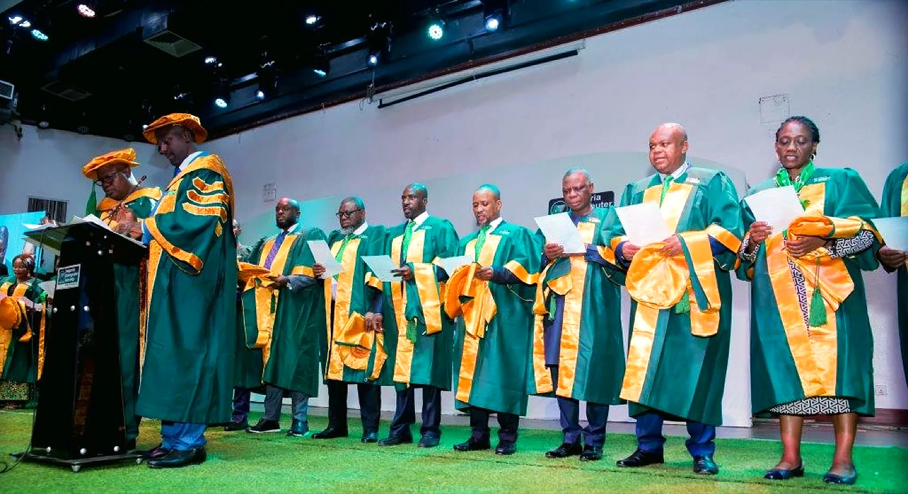
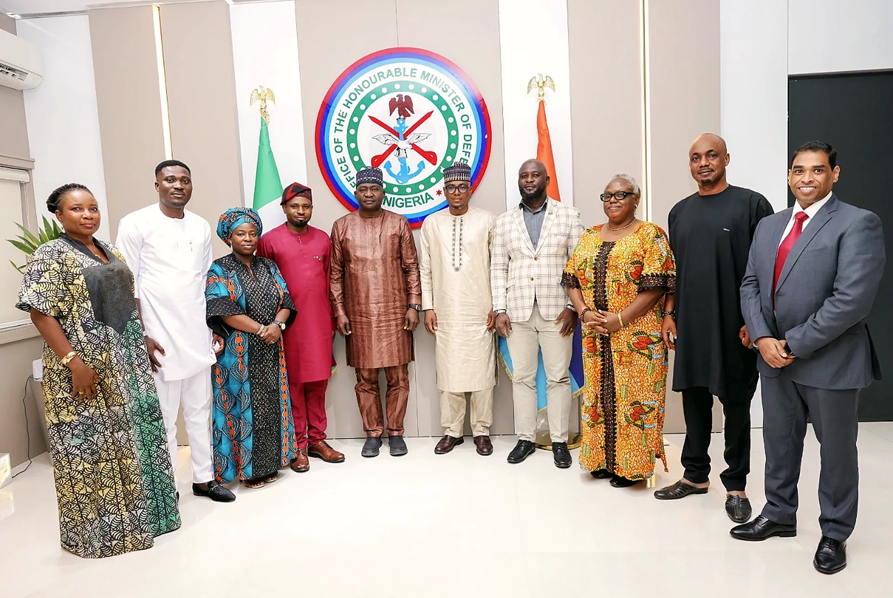
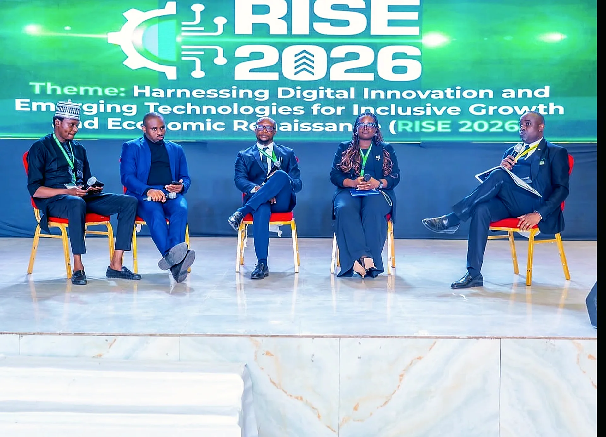
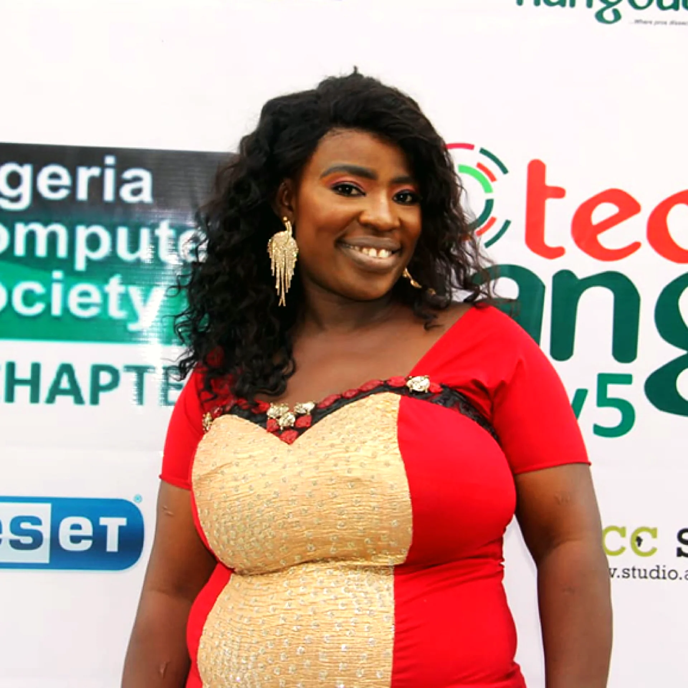
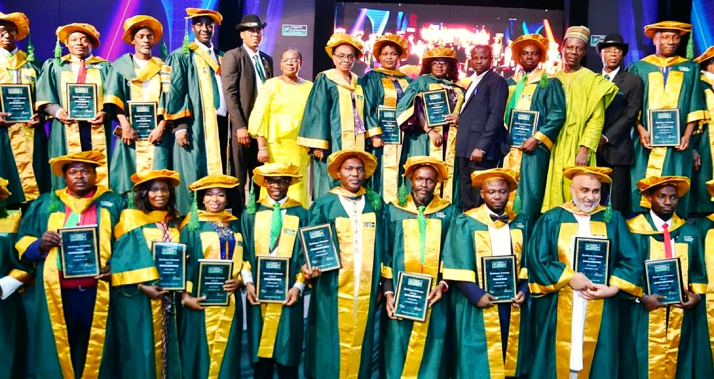
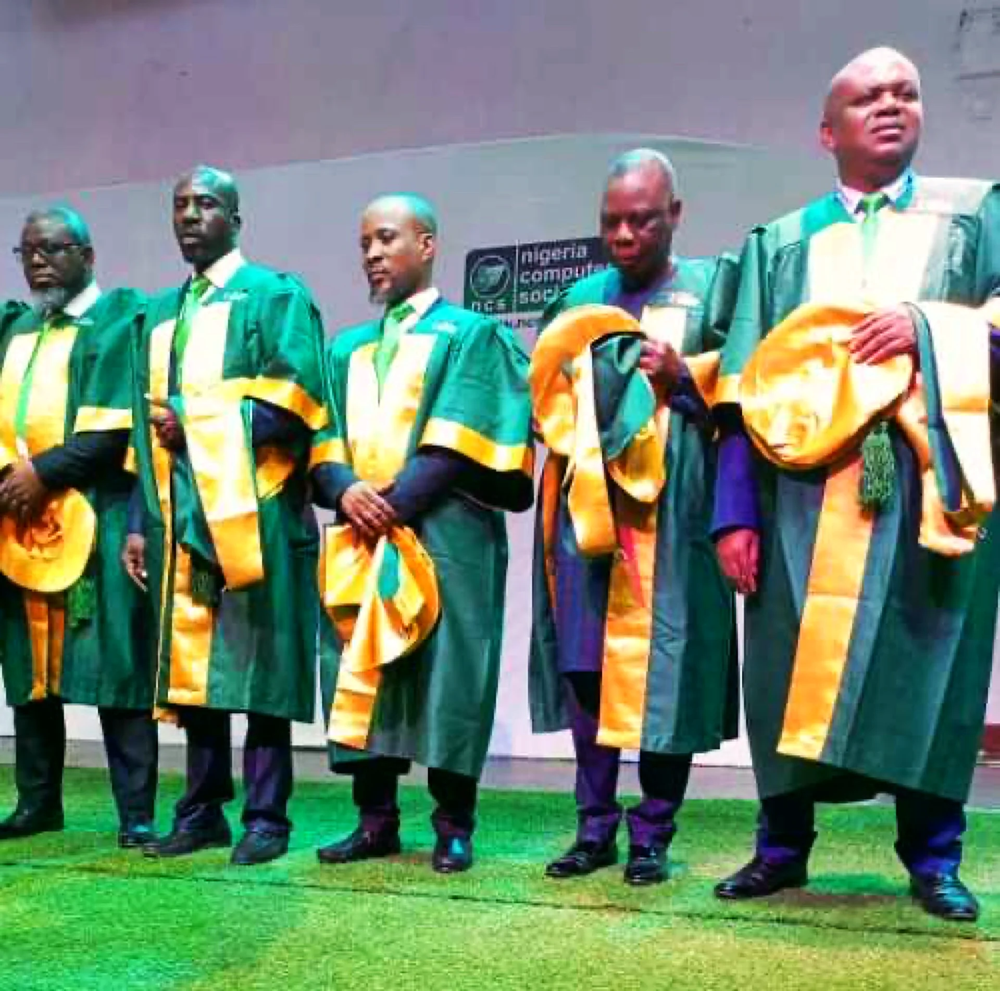

Career development
Keep building professional competence and long-term employability through chapter learning.

Connections, recognition and a voice in the profession, from student to Fellow.
Join through NCSMembership is open to IT professionals, practitioners and anyone with a professional interest in computing.

Keep building professional competence and long-term employability through chapter learning.

Connect your practice with Nigeria’s recognised professional society for IT.

Meet peers across government, industry and academia, and share expertise.
How members grow with the chapter.
Register through the official NCS membership service.

Find peers, mentors, working groups and chapter programmes.

Share expertise by speaking, mentoring, writing or volunteering.

Take on leadership and help grow the profession.
The Society reviews qualifications as the profession evolves. Check the official service for current requirements and dues.

Registration and member services are handled through the national NCS platform. For chapter questions, email abujachapter@ncs.org.ng.
New members are inducted and wear the NCS stole. Fellows are invested at the Society’s national ceremonies. Photos: Nigeria Computer Society.

